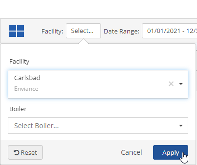
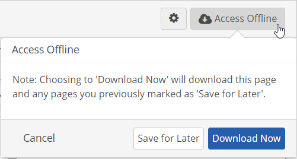
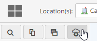
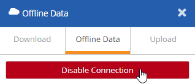
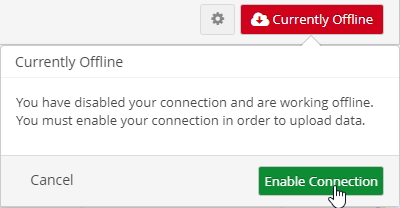
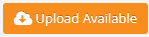
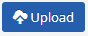

Go to the Portal in your browser.
You can open the app in its own tab using the  icon (if it is does not automatically appear in its own tab).
icon (if it is does not automatically appear in its own tab).
When you are online (connected to the Internet and logged into the system), any work you do is automatically saved to the system when you click Save. However, you can also download data from the Portal that you want to work with, disconnect and work offline, then upload your changes when reconnected.
In the Portal you can work with numeric data and workflows offline.
For Quick Guide instructions to working offline, see the following topics:
Tasks and Events cannot be edited offline at this time.
To complete inspections offline, the inspections you want to work with must first be cached from the InspectionApp while online. You can navigate to the InspectionApp from the Portal in offline mode using a Quick Link. See Working Offline with Inspections for more information.
While offline, you can also use a quick link to navigate to other external URLs if they have been cached by navigating to the URL first in online mode.
Before working offline, you should bookmark the app in your browser so you can access it later.
To bookmark the Portal App for working offline:
Go to the Portal in your browser.
You can open the app in its own tab using the icon (if it is does not automatically appear in its own tab).
If you close your browser and re-open it later, use the bookmark to access the page. You will then be able to access any data that you have added to your offline cache. When connection is restored, the system will automatically switch to online mode and request sign-on.
Steps for working offline in the Portal:
Once you are reconnected, upload the data to the system.
The Upload Available button will let you know that there is data in your cache that needs to be uploaded to the system.
To download a page to work offline:
While connected, open the Portal page that shows the workflows or numeric data you want to work with.
For Numeric Data: Select the objects whose data you want to include from the page object selector.
At least one object selection must be made in order to enable the Access Offline feature for the page.

For Workflows: Do not select objects unless you want to download only workflows associated with these objects.
Any objects selected for numeric data download will also be used as a filter for workflows if they are downloaded at the same time. Be aware that if you download both types of data, you may need to clear or change object selections for workflows and download them separately.
Set the date range on the page for the numeric data or workflows that you want to download.
Date range for workflows usually applies to the due date, but may be another date field according to the configuration.
Click the Access Offline button top right.
You can then choose whether to download data immediately, or save it for later, which adds the page to your offline page selections.

Download Now: The data for the current page (with the date range displayed on the page) will be downloaded and cached immediately. (The button will be disabled for numeric data if you have not selected any objects for the page.)
Save for Later: When you choose this option, the current page will be added to your offline data selections. You can then add more pages to download. When you are done adding pages, click Download Now to download all the pages at once.
The Offline button will show that the download is in process.

When the download is complete, you can disconnect.
When you are disconnected, the Currently Offline button will be shown.
To disconnect manually:
Click the Offline Data button below the main menu button.

Click Disable Connection and click OK to confirm.

If you close your browser and re-open it later, use your Portal bookmark to access the page from your cache. Complete your workflows as usual and save them. The changes will be saved to your cache.
When connection is re-established, you will be re-directed to the sign-on page. To manually re-enable the connection, click the Currently Offline button and select Enable Connection.

Once connection is established, the Upload Available button will show that there is data available to be uploaded.
Saved, cached data will be blue in the table until the data has synced with the system. When the data has been successfully saved to the system, it will return to normal display.
Clearing the cache in your browser before syncing data will cause loss of any saved data created offline.
Select the Upload Available to begin upload.

Click Upload Now to upload your changes immediately.

Alternatively, you can review the changes to be uploaded first by clicking Review Offline Data.
If you choose to review the data, you will see the changed data that is available.

After reviewing changes, click Upload.

If you do not want to upload the data, or need to clear your offline cache, you can delete the offline data.
To delete offline data:
Click Delete all Offline Data.

For more information on using the Offline Data panel, see Offline Data Settings.